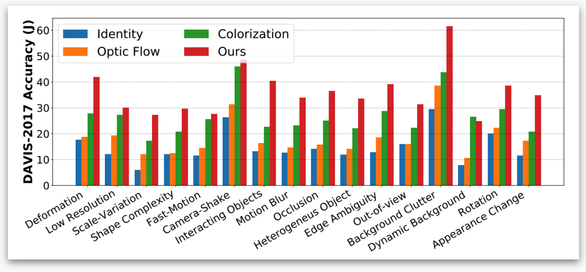

Self-supervised Learning for Video Correspondence Flow
Zihang Lai1, Weidi Xie2
BMVC 2019 (Oral)
1Department of Computer Science, University of Oxford
2Visual Geometry Group, Department of Engineering Science, University of Oxford
DAVIS Semi-supervised prediction task (Given first frame)
The objective of this paper is self-supervised learning of feature embeddings that are suitable for matching correspondences along the videos, which we term correspondence flow. By leveraging the natural spatial-temporal coherence in videos, we propose to train a “pointer” that reconstructs a target frame by copying pixels from a reference frame.
We make the following contributions: First, we introduce a simple information bottleneck that forces the model to learn robust features for correspondence matching, and prevent it from learning trivial solutions, e.g. matching based on low-level colour information. Second, to tackle the challenges from tracker drifting, due to complex object deformations, illumination changes and occlusions, we propose to train a recursive model over long temporal windows with scheduled sampling and cycle consistency. Third, we achieve state-of-the-art performance on DAVIS 2017 video segmentation and JHMDB keypoint tracking tasks, outperforming all previous self-supervised learning approaches by a significant margin. Fourth, in order to shed light on the potential of self-supervised learning on the task of video correspondence flow, we probe the upper bound by training on additional data, i.e. more diverse videos, further demonstrating
significant improvements on video segmentation.
@inproceedings{Lai19,
title={Self-supervised Learning for Video Correspondence Flow},
author={Lai, Z. and Xie, W.},
booktitle={BMVC},
year={2019}
}

- Paper: ArXiv
- Code + Pretrained model: GitHub
- Presentation: Google Drive
- Poster: Google Drive
- Dataset: Kinetics, DAVIS-2017, OxUvA

Video segmentation results on DAVIS-2017 dataset. Higher values are better.
Accuracy by attributes.